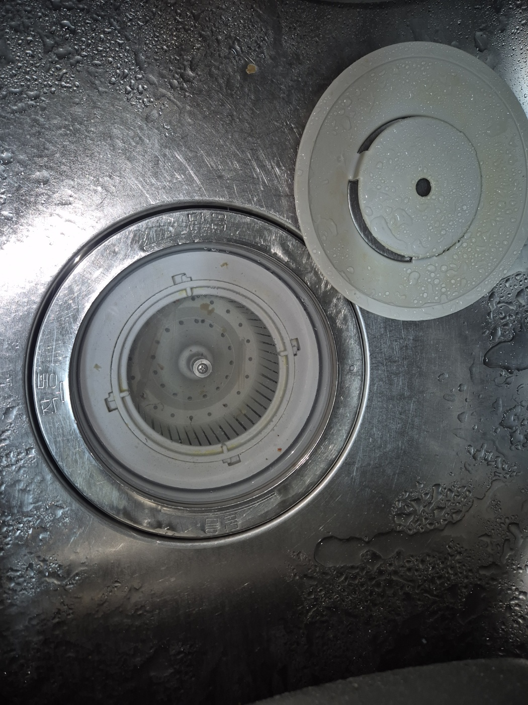
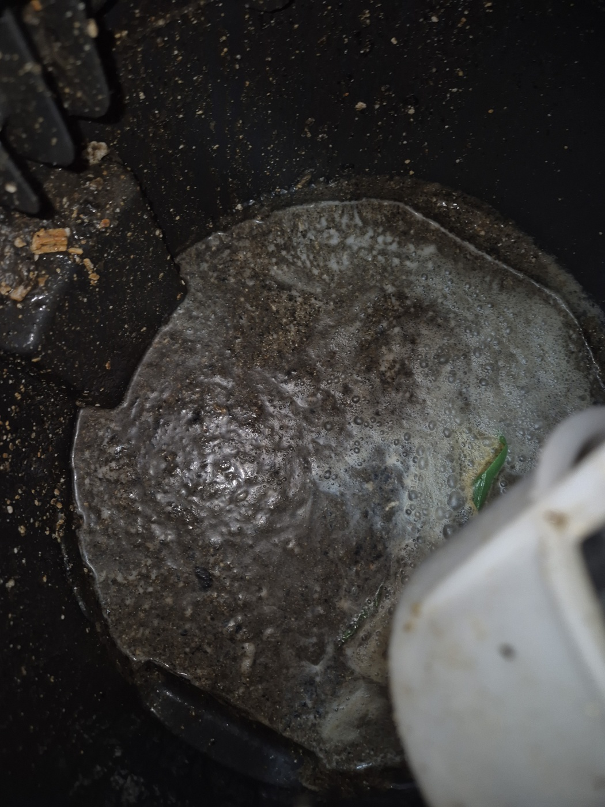
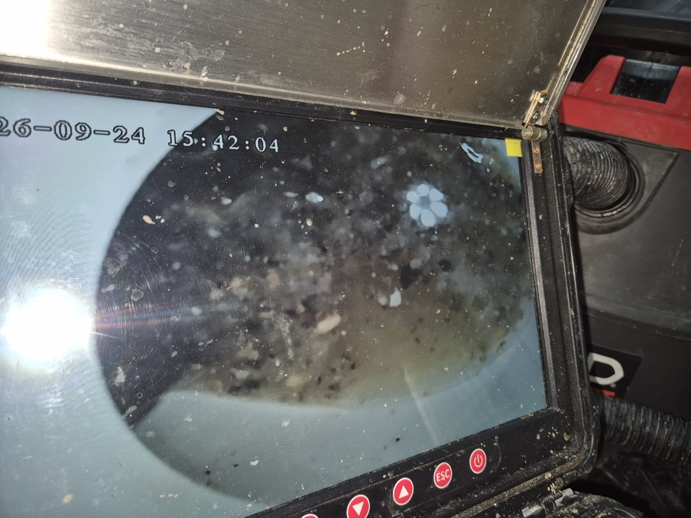
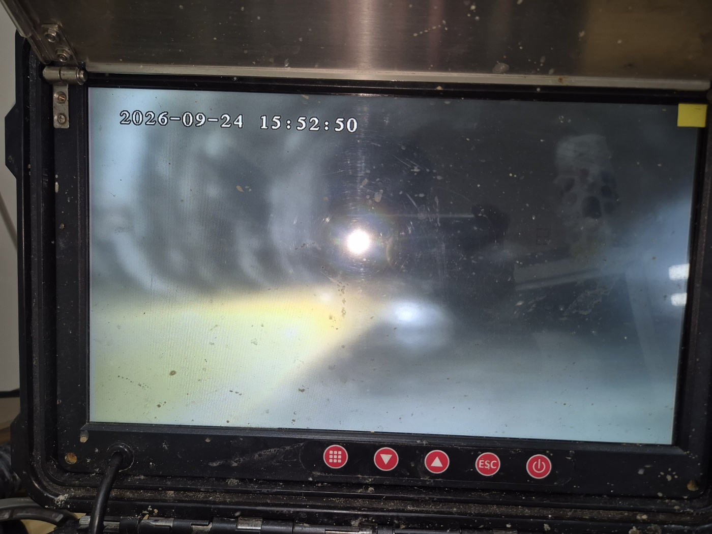
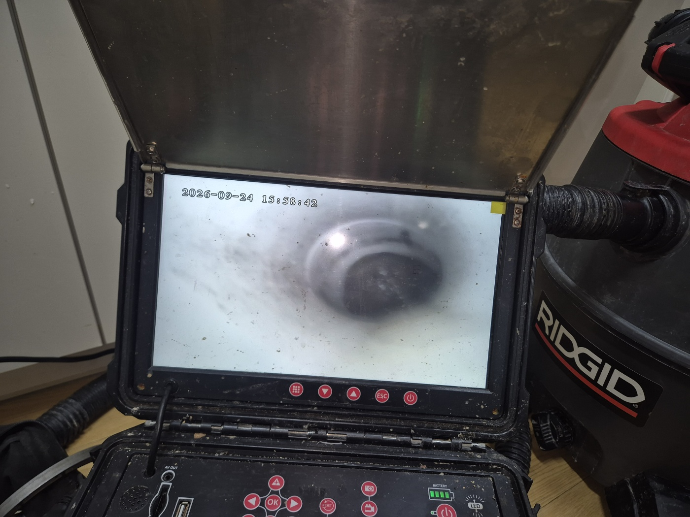

안녕하세요.. 고고고 설비입니다.. 오늘은 안성시에 있는 주택에서 하수구막힘, 싱크대막힘 신고를 받고 다녀온 현장입니다. 주방 바닥 배수구까지 역류한다고 하셨고, 설거지할 때마다 냄새도 올라온다고 하셨어요.
싱크대 배수구 거름망 뚜껑부터 열어서 상태를 확인했는데, 뚜껑 자체는 특별한 이상이 없어서 더 안쪽 배관을 살펴보기로 했습니다. 겉보기엔 깨끗해 보여도 안쪽까지 그런지는 열어봐야 아는 거라서요.
가스레인지 아래 바닥 배수구를 보니 검은 기름때가 섞인 물이 고여서 역류하고 있었습니다. 주방에서 쓰는 물이 한곳으로 모이는 구간이라 이 부분부터 집중적으로 확인해야 했어요. 고여있는 물에서 기름 냄새가 꽤 진하게 올라왔습니다.

내시경 카메라를 배관 안쪽으로 넣어보니 화면이 뿌옇게 흐려질 정도로 이물질이 가득한 게 확인됐습니다. 주방 쪽 배관이라 기름때와 음식물 찌꺼기가 뒤섞여 있었어요.

셕션 장비로 배관 안쪽 이물질을 반복해서 빨아들이며 작업을 진행했습니다. 중간중간 내시경으로 상태를 계속 확인하면서 진행했어요.

작업을 마치고 다시 한번 내시경으로 확인해보니, 처음보다 화면이 훨씬 밝고 매끈해진 걸 볼 수 있었습니다. 물을 내려서 바닥 배수구까지 역류 없이 잘 빠지는 걸 최종 확인했어요. 냄새도 함께 확인해보니 처음보다 한결 가셨습니다.

주방 배관은 기름기와 음식물 찌꺼기가 함께 쌓이기 쉬운 만큼, 설거지 후 뜨거운 물을 한 번씩 흘려보내시고 바닥 배수구 거름망도 자주 비워주시는 게 역류 예방에 도움이 됩니다. 특히 바닥 배수구는 평소 눈에 잘 안 띄는 곳이라 한 번씩 열어서 확인해주시는 것도 좋은 습관입니다.
고고고 설비는 주택, 아파트, 원룸, 상가, 공장의 생활 하수 오수 배관을 관리해 주는 업체입니다. 고고고 설비에 전화 주시면 친절상담 정확한 진단 확실한 해결로 보답해 드리겠습니다!!